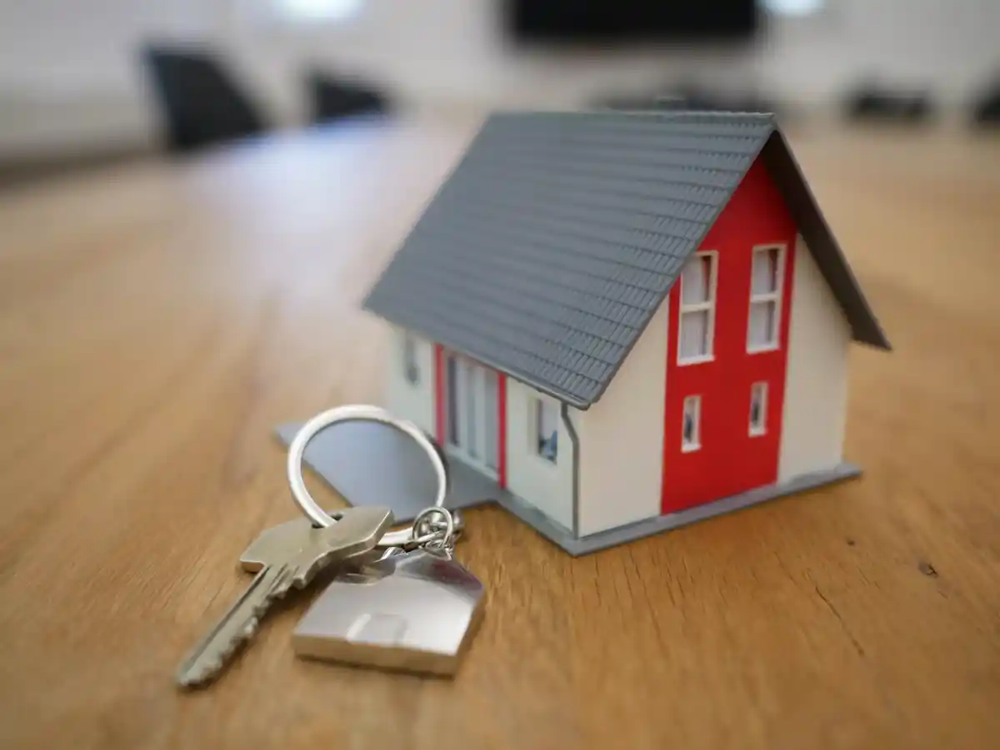
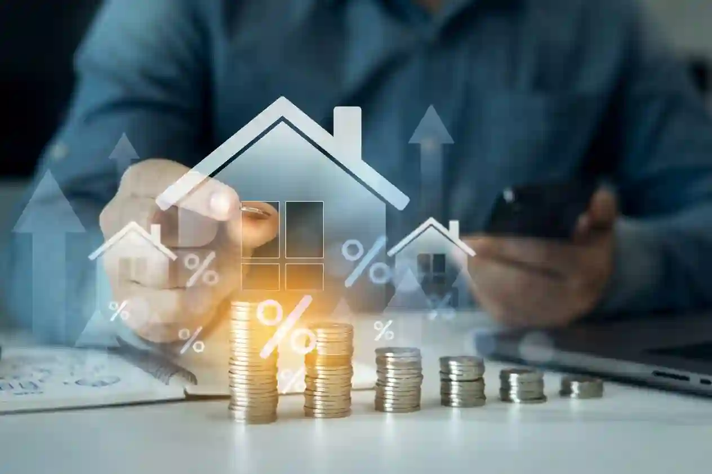

M uchas personas creen que comprar un inmueble consiste en adquirirlo, ponerlo en alquiler y recibir ingresos cada mes. Hasta aquí, parece un camino fácil que casi cualquiera podría tomar hacia la libertad financiera.
Al ser un activo tangible, ofrece una sensación de seguridad que otras inversiones no siempre consiguen transmitir a simple vista.
Sin embargo, tener una propiedad alquilada no significa hacer un buen negocio.
¿Qué nos enseña la rentabilidad inmobiliaria?
Puede haber mucho dinero inmovilizado durante años, meses en los que la propiedad permanece desocupada, gastos de mantenimiento que nadie calculó y una rentabilidad que termina siendo mucho menor de lo esperado cuando se descuentan los impuestos y demás costes.
¿De verdad comprar una propiedad y ponerla en alquiler es tan buen negocio como parece? ¿Por qué hay personas que invierten sus ahorros en un inmueble y, después de varios años, descubren que el dinero que les ha dejado no era tanto como imaginaban o casi nada?
¿Entonces nos han engañado? Quizás no, pero hay una parte de esta historia que merece contarse. Quédate hasta el final, porque vamos a abordar algunos mitos, hacer cuentas y mirar de cerca aquello de lo que casi nadie habla cuando se trata de invertir en bienes raíces.
Nota editorial
Este análisis no pretende desaconsejar la inversión inmobiliaria, sino examinar cuánto dinero deja realmente una propiedad a quien decide invertir en ella.
A continuación, tengamos en cuenta 3 factores.
1. Tener un inmueble no te garantiza rentabilidad
Confundir el valor de un inmueble con su rentabilidad puede llevarnos a pasar por alto algo importante: cuánto dinero produce en relación con el capital que tuvimos que invertir.
Una casa puede costar cientos de miles de dólares, estar ubicada en una zona privilegiada y tener excelentes acabados. Sin embargo, esas características no garantizan que produzca ingresos suficientes para justificar el dinero invertido.
Imaginemos que alguien compra una propiedad por $1.000.000 y consigue alquilarla por $4.000 mensuales:
- Precio de compra: $1.000.000.
- Alquiler mensual: $4.000.
- Ingreso anual por alquiler: $48.000.
- Rentabilidad bruta anual: 4,8 %.
A primera vista, el propietario recibe un ingreso mensual considerable. Pero ese dinero no representa su ganancia neta. Todavía debe asumir impuestos, seguros, reparaciones, mantenimiento, gastos administrativos y posibles periodos en los que la propiedad permanezca vacía.

Supongamos que, después de cubrir todos esos gastos, le quedan $32.000 al año. Sigue ganando dinero y conserva una propiedad que costó un millón de dólares. Entonces, ¿dónde está el problema?
Si analizamos el rendimiento que obtiene por todo ese capital, después de los gastos, su propiedad le está dejando un 3,2 % anual sobre el precio de compra. No es una mala inversión, pero sí es un resultado que merece compararse con otras posibilidades.
Pensemos que ese mismo millón de dólares podría haberse destinado a otra inversión que produjera un 5 % neto anual. En ese escenario, habría generado $50.000 al año, es decir, $18.000 más que con el inmueble.
Esos $18.000 no son dinero que el propietario haya perdido de su bolsillo. Son ingresos que dejó de obtener al elegir una alternativa en lugar de otra. A esto se le conoce como coste de oportunidad: el beneficio al que renunciamos cuando destinamos nuestro dinero a una opción y descartamos las demás.
Por supuesto, esta comparación es hipotética. Cada alternativa tiene sus propios riesgos, condiciones y posibilidades de rendimiento. Además, la propiedad podría aumentar de valor con el tiempo, lo que también tendría que incluirse en el análisis.
Lo importante es entender que recibir dinero cada mes de un inmueble costoso no significa que esté produciendo riqueza proporcional al capital invertido.
Si los ingresos apenas alcanzan para cubrir los gastos, el mantenimiento, los impuestos y la pérdida de poder adquisitivo del dinero, el rendimiento puede ser prácticamente nulo.
En esos casos, el propietario puede pasar años cobrando alquiler y creyendo que su inversión está dando resultados, cuando en realidad apenas está recuperando una parte del capital que destinó a comprar el inmueble.
Las propiedades que consiguen ofrecer una rentabilidad verdaderamente atractiva, después de considerar todos estos factores, son mucho menos comunes de lo que nos suele hacer creer el mercado.
2. El tiempo que se necesita para recuperar el capital
Existe una diferencia importante entre recibir ingresos de una inversión y recuperar el dinero que se utilizó para adquirirla.
Supongamos que una persona compra una propiedad por $200.000 y consigue alquilarla por $1.000 mensuales:
- Capital invertido: $200.000.
- Ingreso mensual bruto: $1.000.
- Ingreso anual bruto: $12.000.
- Rentabilidad bruta anual: 6 %.
- Tiempo aproximado de recuperación del capital: 16 años y 8 meses.
Este último cálculo supone que todos los ingresos se destinan a recuperar el dinero invertido inicialmente y que no existen gastos, impuestos, vacancias ni inflación.
En la realidad, el escenario suele ser menos favorable. El propietario no recibe necesariamente doce mensualidades cada año, ni puede quedarse con la totalidad del alquiler. Por tanto, el tiempo de recuperación puede prolongarse considerablemente.
Esto plantea una cuestión que pocas veces ocupa el centro de las conversaciones inmobiliarias: ¿es realmente atractivo invertir una suma importante de dinero en un activo que puede tardar tantos años en devolver el capital inicial, especialmente cuando los ingresos obtenidos durante ese periodo todavía deben cubrir sus propios gastos?
Recibir dinero mensualmente no significa que la inversión ya haya sido recuperada. Mientras una parte importante del capital siga sin retornar, el inversor continúa dependiendo de que el inmueble mantenga su valor, genere ingresos y pueda venderse en condiciones razonables cuando decida salir de la operación.
3. No es lo mismo heredar una propiedad que comprarla con tus ahorros
Tampoco nos cuentan que los que sí obtienen ganancias de este modelo de negocios son herederos. La rentabilidad que experimenta una persona depende de cómo obtuvo el inmueble.
Alguien que hereda una vivienda valorada en $200.000 puede alquilarla y recibir ingresos sin haber tenido que reunir ni desembolsar esa cantidad para adquirirla.
Por supuesto, tendrá gastos, responsabilidades y deberá considerar el valor económico del activo que recibió.
Pero su situación financiera no es la misma que la de alguien que utilizó $200.000 de sus propios ahorros para comprar exactamente la misma propiedad.
Para el comprador, esos $200.000 representan capital que pudo haber acumulado durante años de trabajo, ahorro o actividad empresarial. Al adquirir el inmueble, necesita evaluar qué rendimiento obtiene sobre ese dinero y cuánto tiempo tardará en recuperarlo.
Esta diferencia ayuda a entender por qué algunas personas pueden considerar que vivir de los alquileres es una estrategia extraordinaria mientras otras, después de comprar una propiedad, descubren que sus ingresos son demasiado bajos en relación con el capital que comprometieron.
No se trata de juzgar qué propiedad es mejor que otra, sino de entender que el punto de partida financiero, el costo de adquisición y el capital desembolsado pueden ser completamente diferentes.
Además, cuando se observan historias de personas que acumularon varias propiedades a lo largo de décadas, conviene preguntarse cuándo compraron, cuánto pagaron, qué financiación utilizaron, cuánto tuvieron que invertir posteriormente y cuánto de su patrimonio proviene de la valorización del mercado.
La renta que reciben hoy no cuenta por sí sola toda la historia de cómo construyeron ese patrimonio.
¿Qué sí deberíamos tener en cuenta?
Las tres realidades de la inversión inmobiliaria
No todas las personas compran inmuebles con el mismo propósito. Y confundir esos objetivos puede llevar a evaluar una propiedad bajo especulaciones que no le corresponden.
Comprar para vivir
Adquirir una vivienda para uso propio puede tener sentido aunque no genere alquileres. Permite disponer de un lugar estable, reducir la dependencia de arrendamientos, adaptar el espacio a las necesidades personales y, dependiendo de las condiciones de compra, construir patrimonio a largo plazo.
En este caso, la decisión no responde exclusivamente a una rentabilidad financiera. También intervienen la estabilidad, la calidad de vida, la ubicación, las necesidades familiares y el costo de seguir alquilando.
Una vivienda propia puede ser una buena decisión personal sin ser necesariamente la inversión más rentable disponible.
Comprar para alquilar
Aquí el objetivo principal es que el inmueble genere ingresos y, eventualmente, se valorice.
La compra debe justificarse por la relación entre el capital invertido, el alquiler que realmente puede obtenerse, los gastos recurrentes, los riesgos de vacancia, la financiación y las perspectivas del mercado.
No basta con encontrar una propiedad atractiva. Debe existir una relación razonable entre lo que cuesta adquirirla y lo que puede producir.
Comprar para especular
En este caso, el objetivo es adquirir un inmueble con la expectativa de venderlo posteriormente a un precio superior.
El beneficio depende en gran medida de la evolución del mercado, las condiciones de la zona, el momento de compra y venta, y los costos que se acumulan durante el periodo de tenencia.
Una propiedad puede permanecer años sin experimentar la valorización esperada. Y si el propietario necesita vender en un momento desfavorable, podría verse obligado a aceptar un precio inferior al que tenía previsto.
La especulación inmobiliaria puede generar ganancias importantes, pero también implica incertidumbre. El hecho de que una zona haya aumentado de valor en el pasado no garantiza que continúe haciéndolo.

¿Qué hace que una propiedad realmente valga la pena como inversión?
Antes de comprar un inmueble para obtener rentabilidad, hay preguntas que deberían tener más peso que el aspecto de la propiedad, su tamaño o la expectativa de que aumente de precio.
- ¿Cuánto capital debo desembolsar realmente, incluyendo los gastos de adquisición?
- ¿Cuánto alquiler puedo obtener de forma realista, sin basarme en cifras optimistas?
- ¿Cuánto dinero quedará después de impuestos, mantenimiento, seguros, administración y vacancias?
- ¿Cuántos años necesitaría para recuperar el capital invertido a través de los ingresos netos?
- ¿Qué ocurriría si la propiedad permanece vacía durante varios meses?
- ¿Podría asumir una reparación importante sin comprometer mis finanzas?
- ¿Qué posibilidades reales existen de que el inmueble conserve o aumente su valor por encima de la inflación?
- ¿Qué otras alternativas tendría para invertir ese mismo capital?
- ¿Qué tan fácil sería vender la propiedad si necesitara recuperar el dinero?
Estas preguntas no eliminan los riesgos, pero ayudan a distinguir una compra emocional de una decisión financiera razonada.
Una propiedad puede ser excelente, estar ubicada en una zona deseable y tener un gran potencial. Sin embargo, si su precio es demasiado elevado en relación con los ingresos que puede generar, quizá no sea una buena oportunidad de inversión.
Cómo invertir en bienes raíces sin poner en riesgo tu capital
No existe una forma de invertir en bienes raíces que elimine completamente el riesgo. Sin embargo, es posible reducir la exposición a decisiones poco fundamentadas si se analiza la operación antes de comprometer el dinero.
Comprar por debajo de un precio razonable de mercado, estudiar la demanda real de alquiler, revisar la situación jurídica del inmueble, calcular los gastos de adquisición y mantenimiento, evaluar la financiación y disponer de reservas para imprevistos son aspectos que pueden marcar una diferencia importante.
También conviene evitar comprometer todo el capital disponible en una única propiedad. Un inmueble puede ser difícil de vender rápidamente y, si surge una necesidad de liquidez, el propietario podría verse obligado a aceptar condiciones desfavorables.
La seguridad de una inversión no depende únicamente de que el activo sea tangible. Depende de cuánto se paga por él, de su capacidad para producir ingresos, de las obligaciones que genera y de la situación financiera de quien lo adquiere.
En ocasiones, la mejor decisión será comprar. En otras, esperar a encontrar una oportunidad que tenga mejores números. Y en algunas circunstancias, simplemente reconocer que el capital puede estar mejor utilizado en otra alternativa.
LA MIRADA DE CÓDIGO MILLONARIO
Los bienes raíces pueden formar parte de una estrategia de construcción de patrimonio, pero comprar una propiedad no garantiza rentabilidad ni protección del capital.
El valor de una inversión está en lo que realmente produce, en lo que conserva y en lo que permite ganar en relación con el dinero, el tiempo y los riesgos que exige.
De nada sirve comprar en $1 y vender en $1 cuando lo que se buscan son ganancias.